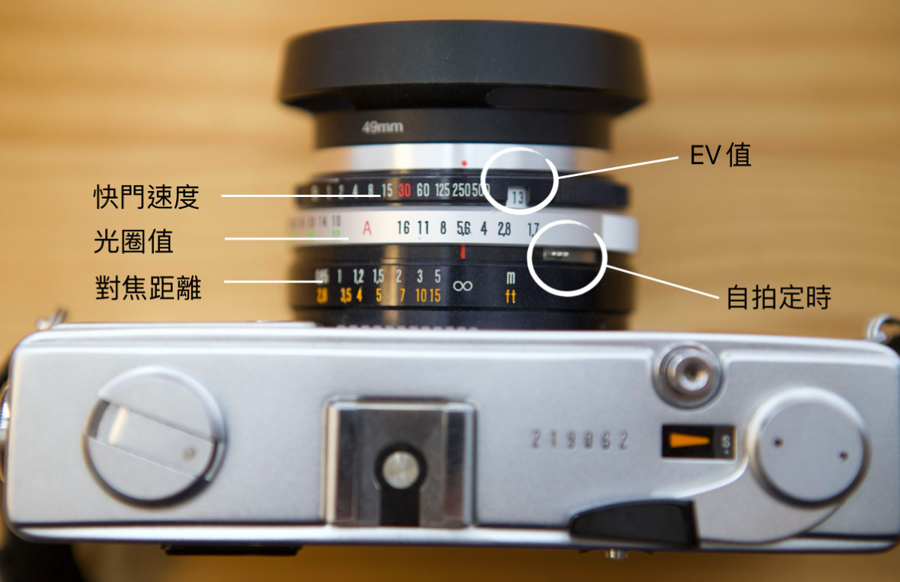
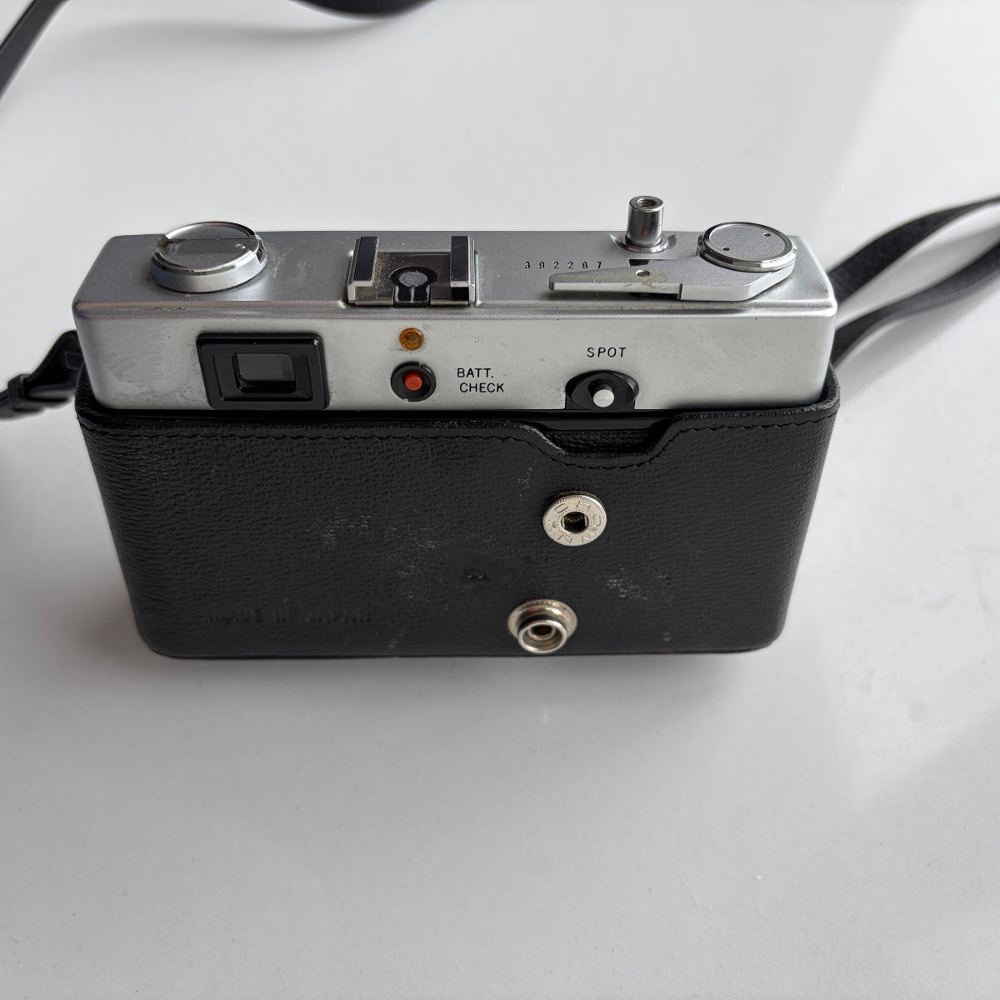
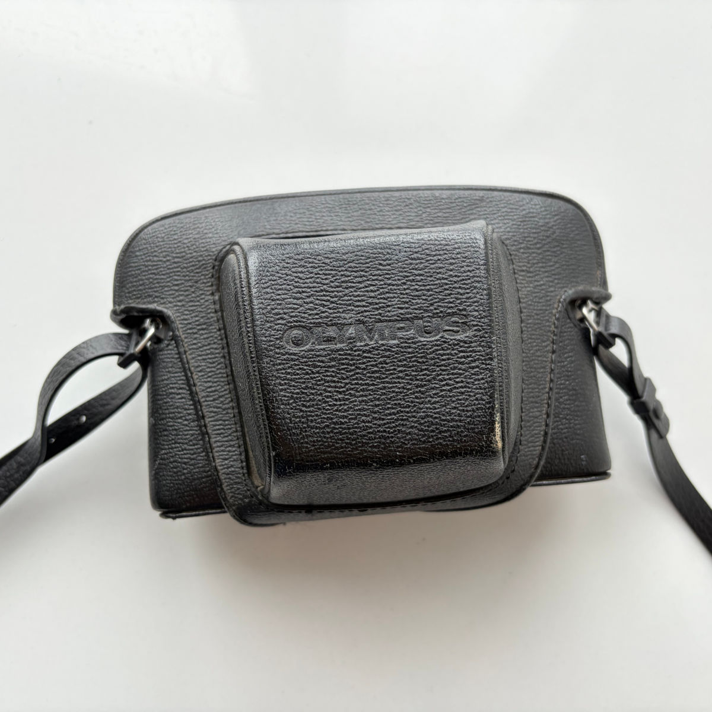

使用感受：
Olympus 35SPn 是我拥有的第一台旁轴胶片相机。
当年从色影无忌看到“旁轴七剑”的帖子，而 Olympus 35SPn 位于榜首，看过它的资料后，一时为之疯魔。（色影无忌已无法打开，但在豆瓣有人转载过 这篇文章 ，喜欢的可以看看）
后四处寻找它的下落，耐何国内遍寻不到，后在国外的 Ebay 看到，遂决心拍下。
要知道在 Ebay 上买卖与淘宝完全不同，实行拍卖制度。有很多人出价，但我看不到别人的出价，直到终止时间时平台才会公开价格，由价高者得。我先试拍了两次其它商品练手，都未得手。等到拍这台 Olympus 相机的时候，我慎重思考后，摒弃了投机心理，将出价抬高到我能接受的最高价格。幸运的是，最终我拍到了这台相机。
不想运输过程又有波折。因为国外包裹上写的全是英文，连我的名字也是拼音，送到单位大楼后无人认领，于是搁置了相当长时间，我与国外卖家联系多次，四处打听，过了好象有两个月左右，终于几番辗转才送到我手里。

这台旁轴非常特别。取景窗明亮清晰，视野很舒服；测光方式采用EV值对应快门与光圈(快门与光圈调节全在镜头上)，刚开始觉得别扭，但习惯后反而觉得非常好用；相机很小巧，型号带 n 的很难得(35SPn)，是后生产的改良型号，我记忆里好象是1973年左右生产的；快门最高速度只有1/500秒，注定不能在太亮的环境中拍照。
有所取舍，才是大智慧。
Published Work
2026-08-16 外拍活动NO.010 | 斜桥火车站旧址黑白片
2016-04-29 上海的夜晚


主要参数：
- 光圈：f1.7~f16
- 快門：B, 1/1~1/500
- 焦段：42mm (口徑49mm)
- 對焦：手動黃斑疊影對焦
- 測光：有自動測光 (快門先決)
- 自拍：有自拍定時 (約10秒)
- 測光：有測光功能，可搭配半自動模式拍攝「Ａ」
- 電池：PX625A、L1560 （可替代使用）